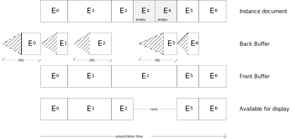

This specification specifies an Hypothetical Render Model (HRM) that constrains the presentation complexity of
documents that conform to any of the TTML Profiles for Internet Media Subtitles and Captions ([[IMSC]]).
The model is not intended as a specification of the processing requirements for implementations. For instance, while the
model defines glyph cache for the purpose of modelling how the number of glyph drawing operations can be reduced, it neither
requires the implementation of such a cache, nor models the sub-pixel glyph positioning and anti-aliased glyph rendering
that can be used to produce text output.
Furthermore, the model is not intended to constrain readability complexity.
For this specification to exit the CR stage, one of the following minimum
combinations of independent factors of verifications SHALL be demonstrated:
at least 1 content producing implementation and at least 1 validating implementation; or
at least 2 independent validating implementations.
The Working Group has identified the following at
risk features:
At risk features may be be removed before advancement to Proposed Recommendation.
The history of substantive changes made to this document is summarized at .
Scope
This specification specifies an Hypothetical Render Model (HRM) that constrains the presentation complexity of a
IMSC Document Instance.
Documentation Conventions
This specification uses the same conventions as [[!IMSC]].
Terms and Definitions
character. The character code property of a Character Information Item.
The term character is for practical purposes
the same as a code point, as defined by [[?i18n-glossary]].
empty ISD. An Intermediate Synchronic Document with no presented region.
A IMSC Document Instanceconforms to the Hypothetical Render Model if the sequence of
Intermediate Synchronic Documents generated from it using the Intermediate Synchronic Document
Construction procedure specified in [[!TTML2]] is processed without error by the HRM algorithm
specified at .
The objective of the HRM is to allow subtitle and caption authors
and providers to verify that the content they provide does not exceed
defined complexity levels, so that playback systems can render the content
synchronized with the author-specified display times.
Playback systems include desktop computers, mobile devices and
home theatre devices.
The HRM is not a new concept: it has been included in all
versions and editions of [[IMSC]] and has remained substantially
unchanged. It is refactored herein to simplify document maintenance.
IMSC Document Instances are typically authored by a first party
and rendered by a second party. Unless both parties agree on the maximum
complexity of a IMSC Document Instance, it is likely that:
an IMSC Document Instance authored by a first party will
exceed the capabilities of the presentation processor of a second
party, resulting in an incomplete presentation where some subtitles or
captions might be missing or might be presented too late;
a first party authors only extremely simple IMSC Document
Instances in an attempt to ensure a complete presentation across all
renderers, resulting in a lower quality presentation;
a second party over-provisions their presentation processor
in order to ensure a complete presentation of all IMSC Document
Instances, resulting in increased run-time resource usage, code
complexity, etc.; or
one presentation processor becomes the de-facto reference to
determine whether the presentation of a IMSC Document Instance
will succeed, at the expense of other renderers and consistency of
presentation.
As illustrated in , by defining a method (the
HRM) to compute a proxy for the complexity of an IMSC Document
Instance and specifying a complexity limit based on such proxy:
implementers can design their presentation processors to maximize the
likelihood that they will be able to render correctly all IMSC Document
Instances that do not exceed this limit; and
audiences can expect subtitle and caption presentation to match
the authorial intention.
Why is the HRM needed to limit complexity?
The HRM supplements the syntactic and structural constraints imposed in
[[IMSC]] by imposing constraints on the contents of the presentation.
Because of the temporal and spatial variability of subtitles and
captions across types of content, territories and languages, it is not
possible to limit the complexity of an IMSC Document Instance using
only average values.
An average-based constraint of 840 characters per
minute could be met in multiple ways, with different rendering
complexities. Contrast two potential approaches:
In the first, 5
characters are presented for a fraction of a second, followed by 835
characters that are then presented for over 59 seconds. This generates a
high rendering complexity for the 835 characters, since there is only a
brief time available to paint them.
In the second, 210 characters are
painted every 15 seconds, giving 15 seconds to prepare for the next
presentation. This has a much lower rendering complexity.
The HRM achieves a more accurate representation of the complexity of an
IMSC Document Instance at any given time by taking into account
its past complexity in addition to its instantaneous complexity. The
same approach is commonly used in video to limit bitstream complexity,
e.g., the Hypothetical Reference Decoder (HRD) specified in
[[iso14496-10]].
How does the HRM measure and limit complexity?
The HRM defines a simple model for the rendering of subtitles and captions, and uses the time it takes to
render subtitles and captions according to that model as a proxy for the complexity of the subtitles and captions.
Rendering includes drawing region backgrounds, rendering and copying text, and decoding and copying images.
Complexity is then limited by requiring that the time to render one subtitle or caption is shorter than the time
elapsed since the previous subtitle or caption.
This simple model requires only a static analysis of the IMSC Document Instance, requires no fetching of
external resources and does not require the IMSC Document Instance to be actually rendered. Several
simplifying assumptions are made to achieve this. For example, the model assumes that each character is
drawn independently, and accounts for that assumption being, in many cases, false, by assigning different render
speeds for different scripts. In general the model is not intended to capture the actual time that an
implementation takes to render subtitles and captions, but rather scale with it: a document that is twice as
complex according to the model would require roughly twice as many resources to actually render.
Where is the HRM used?
The HRM is typically used prior to distribution of the IMSC Document Instance to the end-user, as an
integral part of authoring and as a quality check before distribution.
When the HRM is used, the consequences of an IMSC Document Instance exceeding the HRM limits depends
on the context:
an authoring system might, for example, flag the specific point in
time where the HRM limits were exceeded;
the ingest component of a streaming platform might outright reject
the IMSC Document Instance.
The HRM is not intended to be used when the IMSC Document
Instance is presented to end-users since:
end-users are not concerned with a technical complexity measure,
just as they are not concerned with video bit-rate, but instead with
whether the presentation is successful;
non-empty ISDs are processed using a simple double buffering model: while a non-empty ISD
En is being painted into a Back Buffer by the Presentation Compositor, the previous non-empty
ISD Em is available for display in a Front Buffer; and
empty ISDs merely disconnect the Front Buffer from the display when presented,
i.e., presenting an empty ISD is equivalent to presenting nothing.
The model specifies a (hypothetical) time required for completely painting a non-empty ISD
as a proxy for complexity. Painting includes clearing the Back Buffer, drawing region backgrounds,
rendering and copying glyphs, and decoding and copying images. Complexity is then limited by requiring that
painting of non-empty ISD En begins no earlier than the presentation time of the previous non-empty
non-empty ISD Em and completes by the presentation time of En.
In contrast, there is no complexity involved connecting and disconnecting the Front Buffer from the display, and
thus no complexity associated with empty ISDs.
Whenever applicable, constraints are specified relative to Root
Container Region dimensions, allowing subtitle sequences to be authored independently of
Related Video Object
resolution.
To enable scenarios where the same glyphs are used in multiple successive Intermediate Synchronic Documents, e.g. to convey a CEA-608/708-style roll-up (see
[[CEA-608]] and [[CEA-708]]), a Glyph Cache stores rendered glyphs across Intermediate Synchronic Documents, allowing glyphs to be copied into the Presentation
Buffer instead of rendered, a more costly operation.
The HRM permits a maximum rate of 12 Intermediate Synchronic Documents per second. This is
ultimately limited by the BDraw parameter and is intended to capture processing and presentation overhead. When
converting a [[CEA-608]] signal to IMSC, it is therefore impossible to create IMSC Document Instances that
generate an Intermediate Synchronic Document for every [[CEA-608]] packet, which are sampled at
the video field rate. It is instead preferable to coalesce sequences of [[CEA-608]] packets into longer
groupings, such as words, phrases, complete lines or paragraphs before creating an IMSC Document Instance,
and let the presentation processor perform any desired animation, e.g., typewriter effect.
Similarly, a Decoded Image Cache stores decoded images across Intermediate Synchronic Documents, allowing images to be copied into the Presentation
Buffer instead of decoded.
Each of the terms Presentation Compositor, Glyph Renderer, Glyph Copier, Image Decoder, and Image Copier
is defined by the algorithmic requirements defined for it in this specification.
at the presentation time of Em, where m is the largest non-zero value that is both less than
n and is such that Em is not an empty ISD, if the presentation time of En minus
that of Em is less than IPD; or
at the presentation time of En minus IPD, otherwise.

illustrates the rendering and presentation of Intermediate Synchronic Documents, where the hatched
areas indicate time spent drawing the associated Intermediate Synchronic Document. For example, the
Presentation Compositor begins rendering E1 at the presentation time of E0 since
E1 is not an empty ISD. In contrast, the Presentation Compositor begins rendering
E5 at the presentation time of E5 minus IPD since (i) both E3 and
E4 are empty ISDs and the presentation time of E5 minus that of E2 is
greater than IPD. Furthermore, E2 remains in the Front Buffer until the presentation time of
E5 but is not presented while E3 and E4 are presented, during which time the
Front Buffer is not available for display. Finally, the Presentation Compositor begins rendering E0
at the presentation time of E0 minus IPD since E0 is the first Intermediate
Synchronic Document.
The contents of the Back Buffer are transferred instantaneously to the Front Buffer at the presentation
time of a non-empty ISD En, making the latter available for display.
The Front Buffer is:
disconnected from the display while an empty ISD is being presented; and
connected to the display, otherwise.
It is possible for the contents of the Front Buffer to never be displayed. This can happen, for
example, if the Back Buffer is copied twice to Front Buffer between two consecutive video frame boundaries of the
Related Video Object.
BDraw effectively sets a limit on fillings regions - for example, assuming that the Root Container
Region is ultimately rendered at 1920×1080 resolution, a BDraw of 12 s-1 would correspond to a fill rate of
1920×1080×12/s=23.7×220pixels s-1.
NBG(Ri) is the total number of elements within the tree rooted at region Ri that satisfy the following criteria:
the element is either a region, body, div, p or
span; and
the opacity of the computed value of tts:backgroundColor is not 0.
An element and its parent that satisfy the criteria above and share identical computed values of
tts:backgroundColor are counted as two distinct elements for the purpose of computing NBG(Ri).
The set element is not included in the computation of NBG(Ri). While it can affect the
computed values of tts:backgroundColor, it is removed during Intermediate Synchronic Document
construction.
if an identical image is present in the Decoded Image Cache, copies the image from the Decoded Image Cache
to the Back Buffer using the Image Copier and flag the image as retain; or
otherwise, decodes the image, using the Image Decoder, into both the Back Buffer and the Decoded Image Cache,
and flags the image as retain.
Two images are identical if and only if they reference the same encoded image source.
purge from the Decoded Image Cache all images not flagged retain;
remove the retain flag from all remaining images; and
It SHALL be an error if the sum of the Normalized Image Area over all images flagged retain
in the Decoded Image Cache is at any time greater than the Normalized Decoded Image Cache Size (NDIBS).
The abbreviation NDIBS reflects the name of the Decoded Image Cache from earlier editions of the
specification.
The following table specifies the values of ICpy, IDec, and NDBIS.
Parameter
Initial value
Normalized image copy performance factor (ICpy)
6
Image Decoding rate (IDec)
1 × 220 pixels s-1
Normalized Decoded Image Cache Size (NDIBS)
0.9885
Paint Text
In the context of this section, a glyph is a tuple consisting of (i) one character and (ii) the computed values
of the following style properties:
tts:color
tts:fontFamily
tts:fontSize
tts:fontStyle
tts:fontWeight
tts:textDecoration
tts:textOutline
tts:textShadow
In the case where a property is prohibited in a profile of [[IMSC]], the computed value of the property
specified in [[ttml2]] can be used.
The Hypothetical Render Model defines a one-to-one mapping between characters and glyphs
(using the definition of glyph from this document).
While a one-to-one mapping between code points and glyphs (using the definition of glyph from [[?i18n-glossary]])
is common in some scripts (such as the Latin script),
the actual relationship is more complex.
Some scripts, such as Arabic, use different glyphs for a given character,
depending on its position in a word.
Some scripts require combining marks or use a sequence of code points to form a glyph.
Cases exist where a given sequence of code points can have different glyph representations depending on context.
This complexity is accounted for by reducing the performance of the Glyph Cache
for scripts where a one-to-one mapping is not the general rule (see GCpy below).
if an identical glyph is present in the Glyph Cache, copies the glyph from Glyph Cache
to the Back Buffer using the Glyph Copier and flag the glyph as retain; or
otherwise renders (using the Glyph Renderer) the glyph into the Back Buffer and Glyph Cache, and flags
the glyph as retain.
NRGA(gi) does not take into account decorations (e.g. underline), effects (e.g. outline) or actual
typographical glyph aspect ratio. An implementation can determine an actual cache size needs based on worst-case glyph size
complexity.
purge from the Glyph Cache all glyphs not flagged retain; and
remove the retain flag from all remaining glyphs in the Glyph Cache; and
It SHALL be an error if the sum of NRGA(gi) over all glyphs flagged
retain in the Glyph Cache is at any time larger than the Normalized Glyph Cache Size (NGBS).
The abbreviation NGBS reflects the name of the Glyph Cache from earlier editions of the
specification.
Unless specified otherwise, the following table specifies values of GCpy, Ren and NGBS.
Normalized glyph copy performance factor (GCpy)
Script property, as defined at [[!UAX24]], for the character of
gi
GCpy
Latin, Greek, Cyrillic, Hebrew or Common
12
any other value
3
Text rendering performance factor Ren(Gi)
Script property, as defined at [[!UAX24]], for the character of
gi
Ren(Gi)
Han, Katakana, Hiragana, Bopomofo or Hangul
0.6
any other value
1.2
Normalized Glyph Cache Size (NGBS)
1
While DURT(En) is not affected, the choice of font by the presentation processor can increase actual rendering
complexity at time of presentation. For instance, a cursive font might select different glyphs for a given grapheme (in order to maintain joining or for the start/end of the
word) even in the Latin script. Conversely the rendering of scripts that fall in the any other
value category can in practice achieve performance comparable to, say, the Latin script.
Accessibility Considerations
Impact of non-conformance
In a system where IMSC Document Instances are expected to conform to the Hypothetical Render Model, an IMSC
Document Instance that does not conform to the Hypothetical Render Model might negatively impact accessibility
during presentation of the IMSC Document Instance and its associated content.
User customisation of presentation
This specification does not attempt to model any additional complexity for presentation processors
that might arise due to the user customisation of presentation,
for example as described by [[media-accessibility-reqs]];
such user customisation is not defined by [[IMSC]].
Implementers of presentation processors
that support user customisation of presentation should ensure that those processors are able
to present IMSC Document Instances that conform to the Hypothetical Render Model,
even if the customisation effectively increases the complexity of presentation.
Privacy and Security Considerations
General
This specification has no inherent security or privacy implications.
The algorithm defined within this specification is used for static analysis of a resource.
This specification does not define any protocol or interface for obtaining such a resource,
and it does not define any interface for exposing the results of the analysis.
No personal or sensitive information is processed as part of the algorithm,
other than any such information that might happen to be part of the IMSC Document Instance being analysed.
No information is exposed by the algorithm to any origin.
No scripts are loaded or processed as part of the algorithm
and no links to external resources are dereferenced.
Implementation considerations
Implementers of this specification should capture and meet privacy and security requirements for their intended application.
For example, an implementation could, when reporting on an error encountered during processing of an IMSC Document Instance,
include a section of the content of an IMSC Document Instance to elaborate the error.
If that content could include sensitive or personal information,
the implementation should ensure that any such output is provided using appropriately secure protocols.
No such reporting is defined or required by this specification.
Error Reporting and Exception Handling
Error Reporting
This specification does not define how, or even if, errors should be reported.
For example, an implementation could stop on the first error encountered,
or continue to process the IMSC Document Instance
and report every error.
Or an implementation could exit with an appropriate status code
without reporting any details at all.
Exception Handling
This specification does not define any runtime exceptions,
or how such exceptions should be handled.
In order to allow short (less than 100 ms) gaps between subtitles, which is common practice, the complexity
of presenting empty ISDs has been reduced to zero: instead of being drawn into the Back Buffer, an
empty ISD merely disconnects the Front Buffer from the display while it is presented.